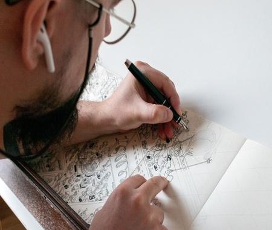
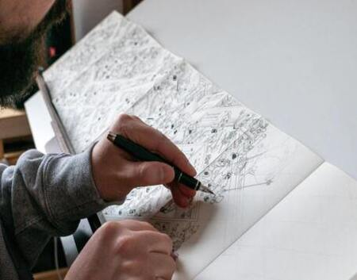

Peter Lutov
Кто же он?
-
 Дизайнер
-
Иллюстратор
-
 Пётр

У него есть хобби
Вот уже несколько лет он рисует замечательные иллюстрации и делится ими с людьми


Иллюстрация стала для него чем-то большим...
Сейчас Пётр работает с детскими журналами, продаёт свои работы и почти искусно рисует упитанных хомяков